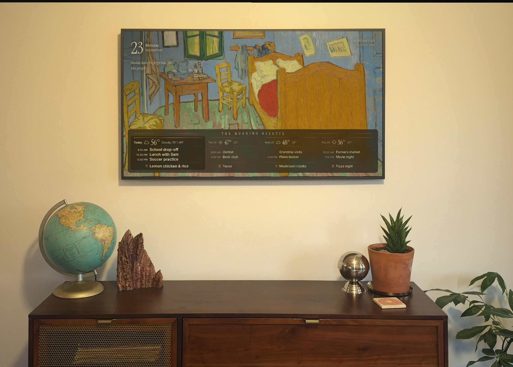
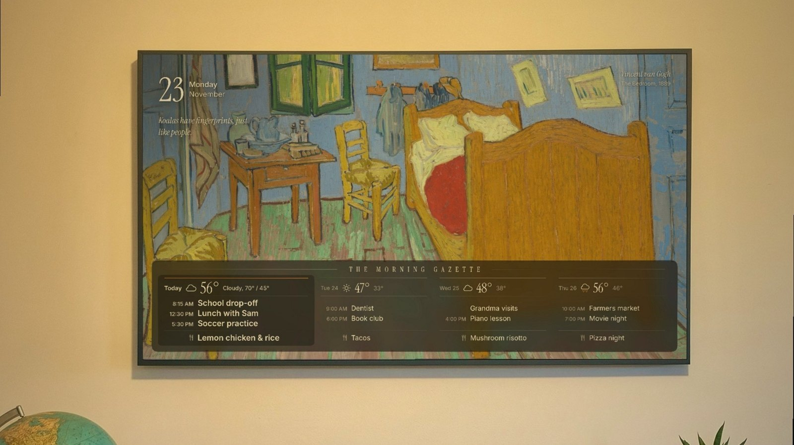
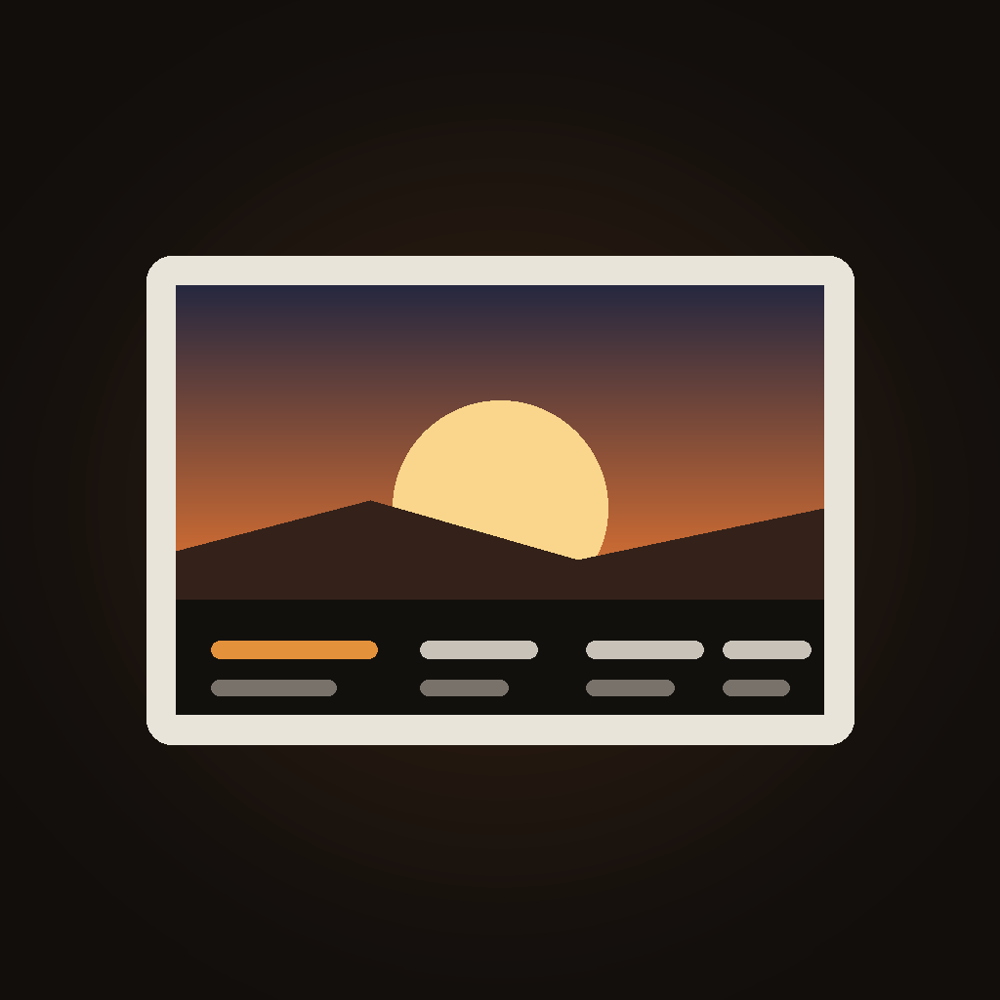

Press kit
Gazette is an iPhone app that turns a Samsung TV's Art Mode into a quiet morning paper. Each day it hangs a painting on the wall with a slim strip showing the family's next four days, the weather and what's for dinner. It updates itself before anyone wakes up, and it needs no hub, computer or account.
Facts
| Maker | Near Future Lab, an independent studio in Atlanta |
| Platform | iPhone (iOS 17 or later); works with Samsung The Frame from 2020 on |
| Price | Free to try; Gazette Plus $14.99 a year or $29.99 once |
| Launch | December 2026 |
| Privacy | No accounts, no ads, no tracking; the calendar never leaves the phone except to go to the TV |
The short version
Family wall calendars cost hundreds of dollars plus a subscription, and they're one more screen on the wall. Many families already have the best screen in the house hanging there. Gazette uses it, and keeps it looking like art.
Images
Free to use with coverage of Gazette. Right-click or long-press to save.



Contact
For interviews, promo codes and beta access, send a message through the app (Activity › Send report) or reach out on Instagram.